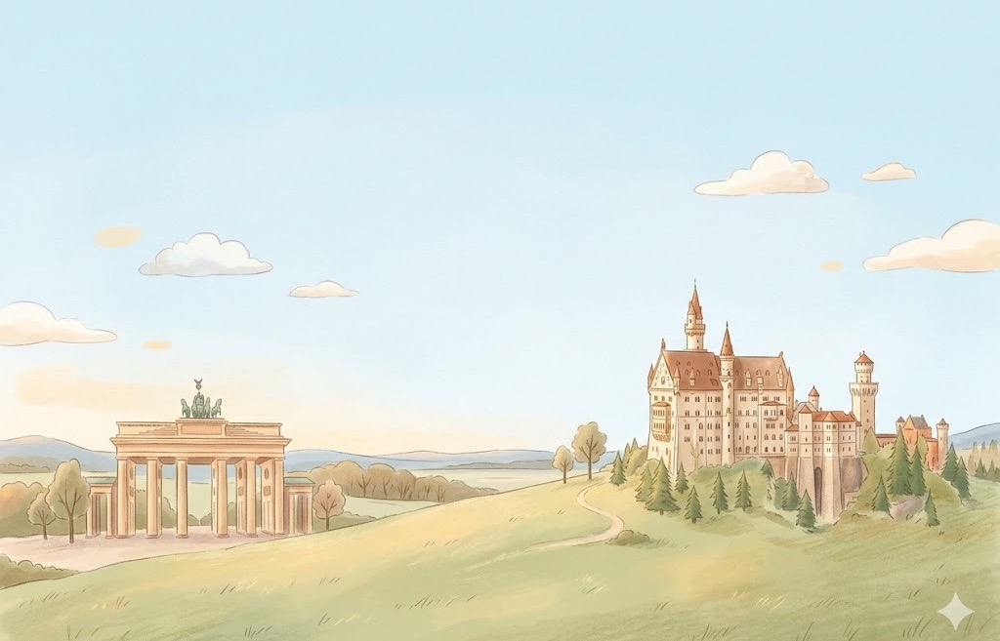
Hier stehen die wichtigsten Daten zu deinem Land. In der App baust du daraus deinen eigenen Steckbrief.
| Hauptstadt | Berlin |
| Kontinent | Europa |
| Sprache | Deutsch |
| Währung | Euro |
| Einwohner | rund 84 Millionen Menschen |
| Fläche | etwa 357.000 km², das ist ungefähr so groß wie eine Million Fußballfelder nebeneinander |
| Großer Berg | Zugspitze, 2.962 Meter hoch |
| Nachbarländer | Dänemark, Polen, Tschechien, Österreich, die Schweiz, Frankreich, Luxemburg, Belgien und die Niederlande |
In Deutschland gibt es viele berühmte Orte. Diese vier solltest du kennen.
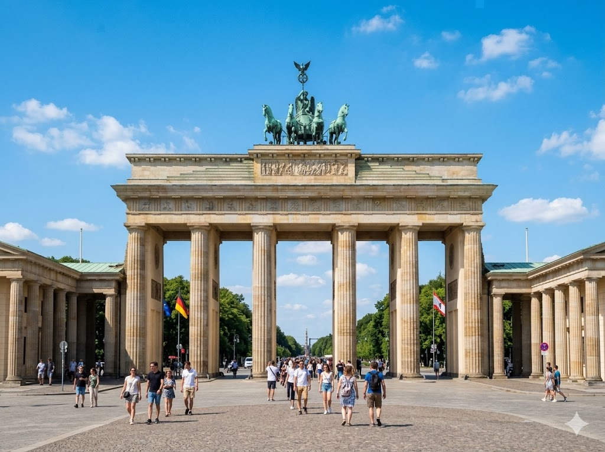
Brandenburger TorDas Brandenburger Tor steht mitten in Berlin. Es ist ein berühmtes Wahrzeichen von ganz Deutschland. Oben auf dem Tor steht ein Wagen mit vier Pferden aus Kupfer. Viele Menschen besuchen das Tor jedes Jahr.
Grüne Wörter für die Appin BerlinWahrzeichenvier Pferdenaus Kupferberühmtes
Schloss NeuschwansteinSchloss Neuschwanstein liegt in Bayern auf einem Berg. König Ludwig der Zweite ließ es vor langer Zeit bauen. Das Schloss sieht aus wie aus einem Märchen. Jedes Jahr kommen sehr viele Besucher zu dem Schloss.
Grüne Wörter für die Appin Bayernauf einem BergKönig Ludwigwie aus einem MärchenBesucher
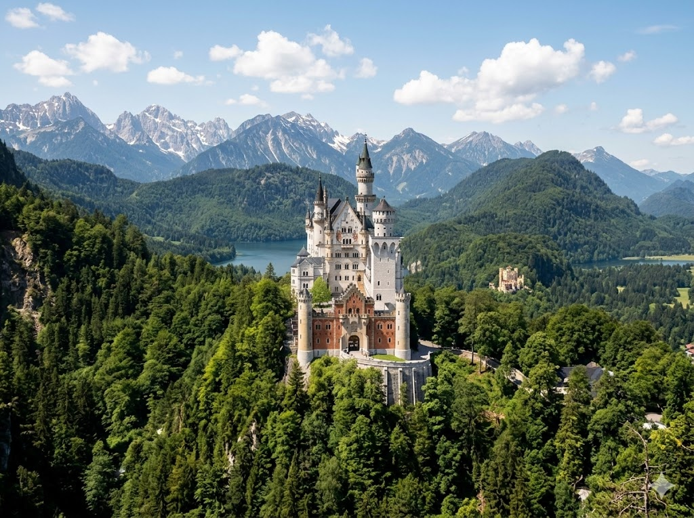
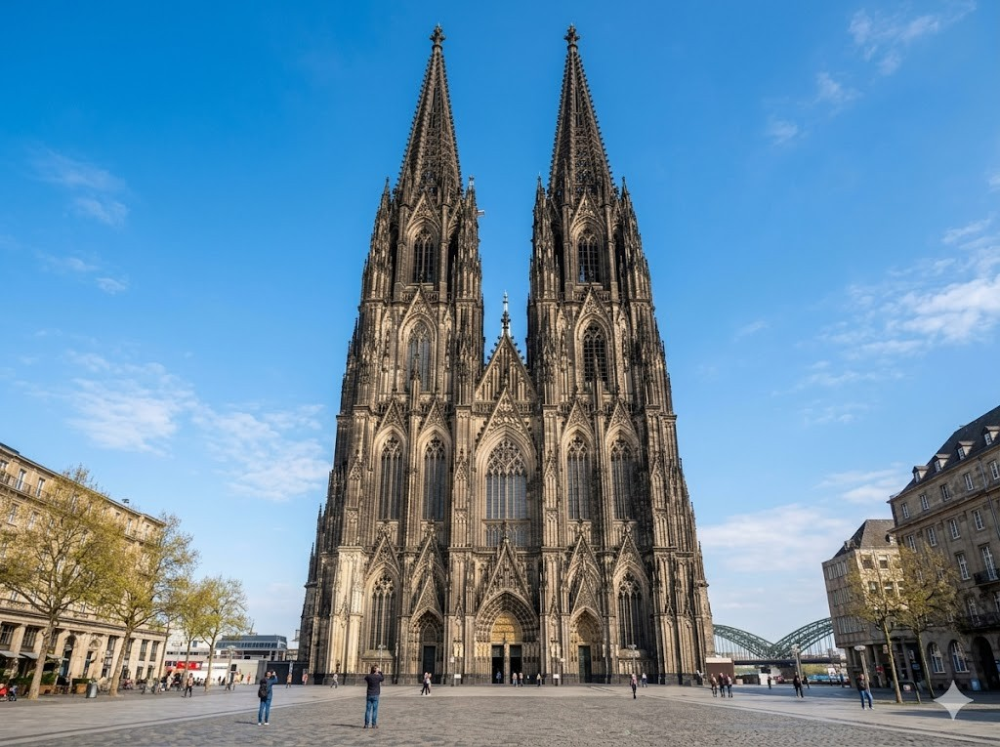
Kölner DomDer Kölner Dom ist eine riesige Kirche in der Stadt Köln. Er hat zwei sehr hohe Türme. Der Bau dauerte mehr als 600 Jahre. Heute ist der Dom eines der bekanntesten Bauwerke in Deutschland.
Grüne Wörter für die Appriesige Kirchein der Stadt Kölnzweihohe Türme600 Jahre
ZugspitzeDie Zugspitze ist der höchste Berg in Deutschland. Sie ist 2.962 Meter hoch und liegt in Bayern. Mit einer Seilbahn kann man ganz nach oben fahren. Von dort hat man einen weiten Blick über die Berge.
Grüne Wörter für die Apphöchste Berg2.962 Meterin BayernSeilbahnweiten Blick
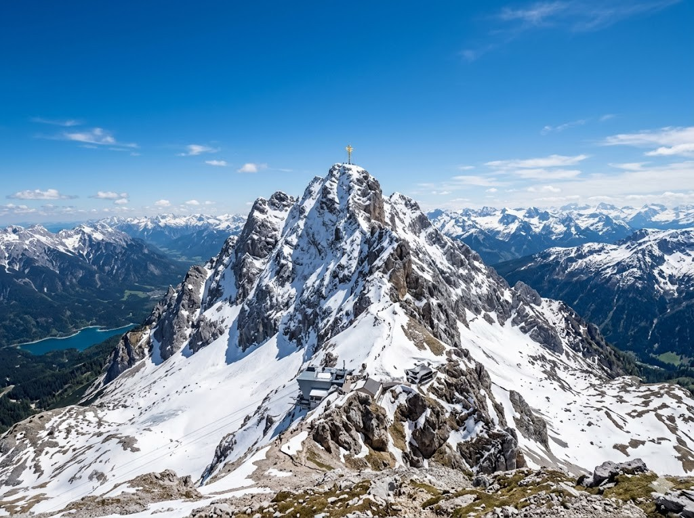
Diese Tiere leben in Deutschland und sind ganz besonders.
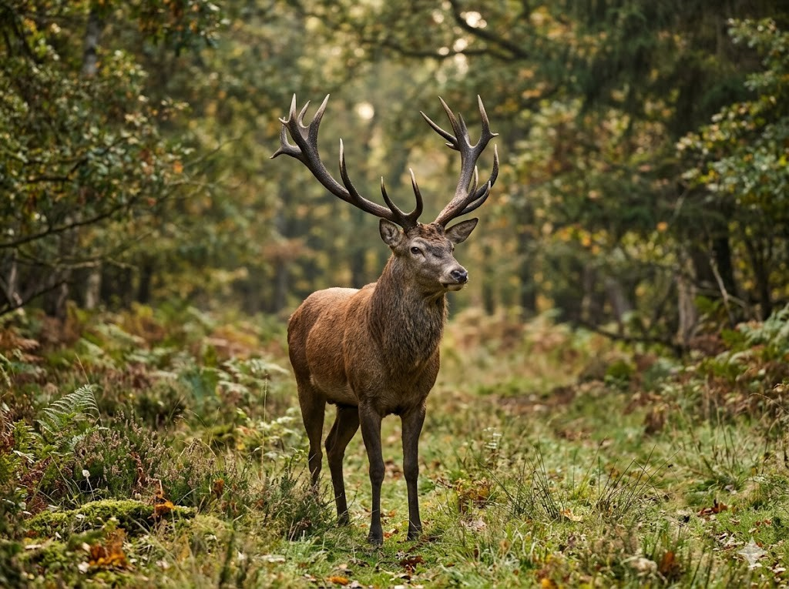
RothirschDer Rothirsch ist eines der größten Tiere im deutschen Wald. Die Männchen tragen ein großes Geweih auf dem Kopf. Im Herbst hört man die Hirsche laut röhren. Rothirsche fressen am liebsten Gras, Blätter und Kräuter.
Grüne Wörter für die Appgrößten Tiereim deutschen WaldGeweihröhrenGras
WildschweinDas Wildschwein lebt im Wald und hat ein braunes, borstiges Fell. Es wühlt mit der Nase im Boden nach Futter. Die kleinen Babys heißen Frischlinge und haben Streifen. Wildschweine sind meistens in der Nacht unterwegs.
Grüne Wörter für die Appim Waldborstiges FellNaseFrischlingein der Nacht
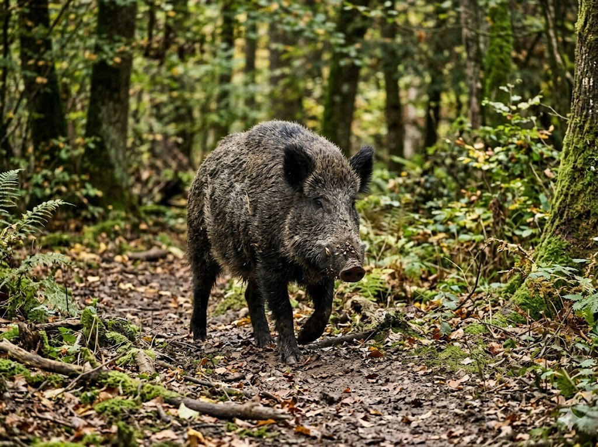
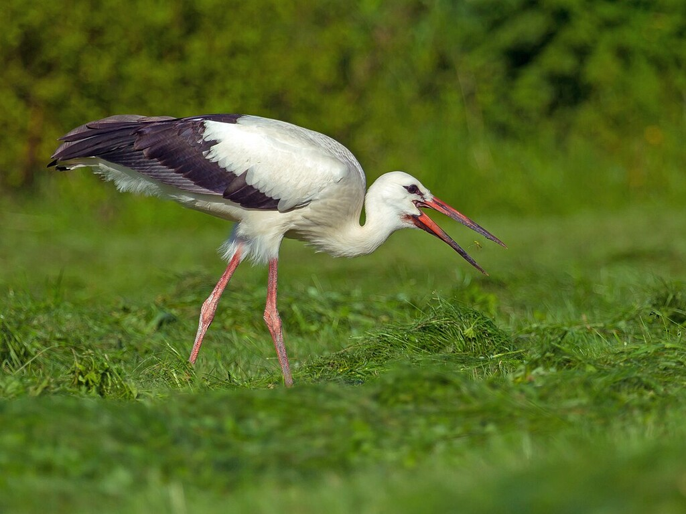
WeißstorchDer Weißstorch ist ein großer Vogel mit weißen Federn und einem roten Schnabel. Er baut sein großes Nest gern auf Dächern und Masten. Im Winter fliegt der Storch in warme Länder nach Süden. Störche fressen Frösche, Mäuse und Würmer.
Grüne Wörter für die Appgroßer Vogelroten SchnabelNestin warme LänderFrösche
In der App kannst du beim Essen das Foto nehmen oder dein Gericht selbst malen.
BrezelDie Brezel ist ein Gebäck aus Teig in einer besonderen Form. Sie hat oben grobes Salz und schmeckt herzhaft. Vor allem in Bayern essen viele Menschen gern eine Brezel. Man kann sie beim Bäcker kaufen.
Grüne Wörter für die AppGebäckbesonderen Formgrobes Salzin Bayernbeim Bäcker
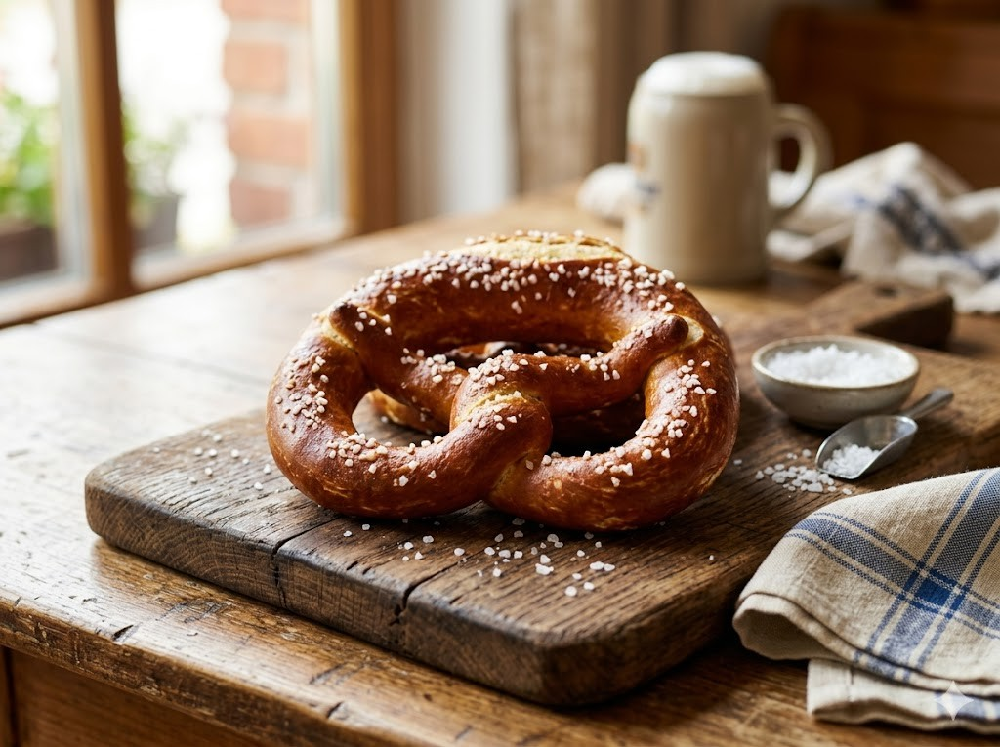
BratwurstDie Bratwurst ist eine Wurst, die in der Pfanne oder auf dem Grill gebraten wird. Sie schmeckt gut mit Senf oder Ketchup. Oft isst man sie in einem Brötchen. Besonders gern isst man sie auf vielen Festen.
Grüne Wörter für die AppWurstauf dem Grillmit SenfBrötchenauf vielen Festen
Schwarzwälder KirschtorteDie Schwarzwälder Kirschtorte ist eine süße Torte aus Schokolade und Sahne. Zwischen den Schichten liegen saure Kirschen. Sie kommt aus der Gegend vom Schwarzwald. Viele Menschen essen sie zum Kaffee am Nachmittag.
Grüne Wörter für die Appsüße TorteSahneKirschenvom Schwarzwaldzum Kaffee
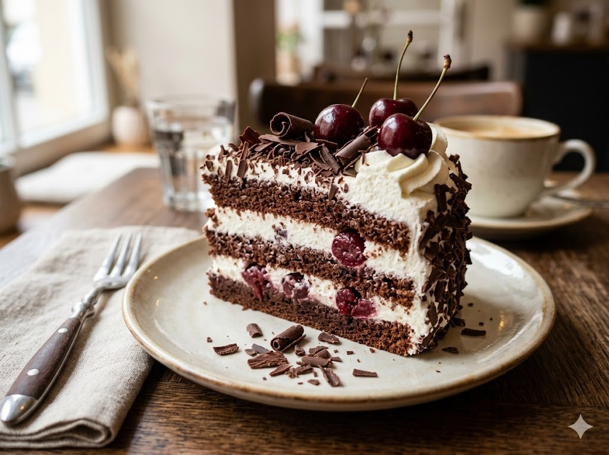
⚽ Gut zu wissen
Die deutsche Nationalmannschaft heißt auch Die Mannschaft. Die Spieler tragen ein weißes Trikot mit schwarzen Details. Deutschland wurde schon viermal Weltmeister, nämlich 1954, 1974, 1990 und 2014. Fußball ist in Deutschland sehr beliebt bei Groß und Klein. Viele Menschen schauen die Spiele zusammen im Fernsehen.
Grüne Wörter für die AppDie Mannschaftweißes Trikotviermal Weltmeister2014sehr beliebt
🌟 Profi-Wissen
2006 richtete Deutschland die Weltmeisterschaft selbst aus. Die Stimmung war so schön, dass alle von Sommermärchen sprachen. 2014 wurde Deutschland Weltmeister. Mario Götze schoss das Entscheidungstor im Finale gegen Argentinien. Deutschland wurde bisher viermal Weltmeister.
Grüne Wörter für die AppSommermärchen 20064x WeltmeisterMario Götze WM-Tor 2014Die MannschaftGastgeber 2006
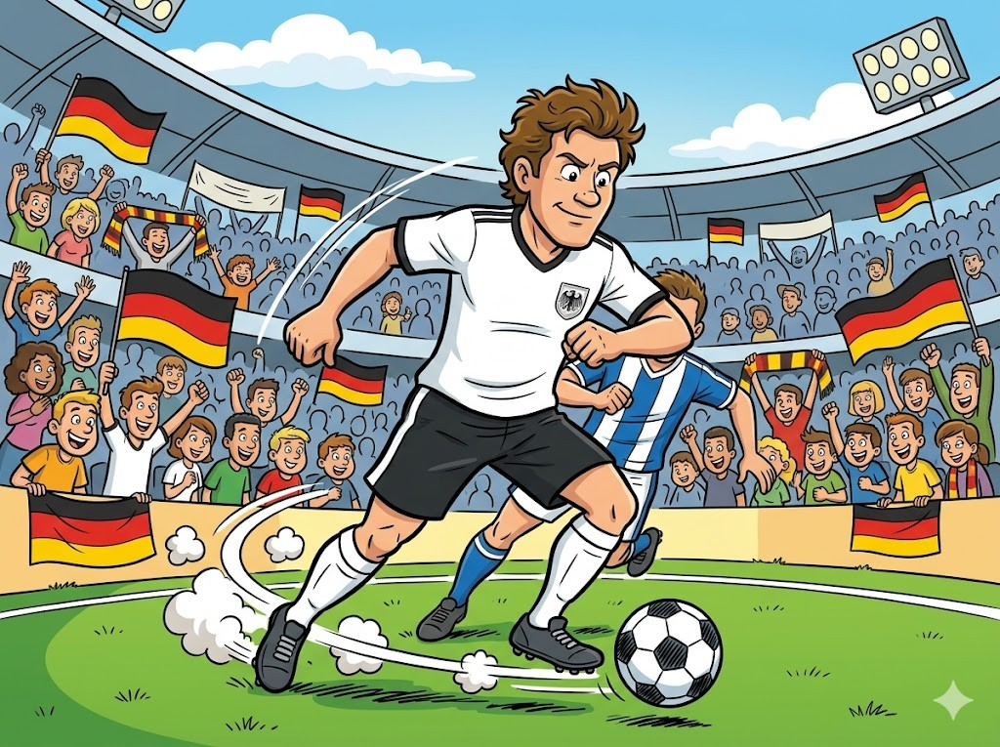
Schule und EinschulungIn Deutschland gehen die Kinder mit etwa sechs Jahren in die Schule. Am ersten Schultag feiern sie ihre Einschulung. Dabei bekommt jedes Kind eine bunte Schultüte mit kleinen Geschenken. In der Grundschule lernen die Kinder lesen, schreiben und rechnen.
Grüne Wörter für die Appsechs JahrenEinschulungSchultüteGrundschulerechnen
WeihnachtsmarktIn der Adventszeit gibt es in vielen Städten einen Weihnachtsmarkt. Dort stehen viele bunte Buden mit Lichtern. Es riecht nach gebrannten Mandeln und Plätzchen. Die Kinder fahren gern Karussell auf dem Markt.
Grüne Wörter für die AppIn der AdventszeitWeihnachtsmarktBudengebrannten MandelnKarussell
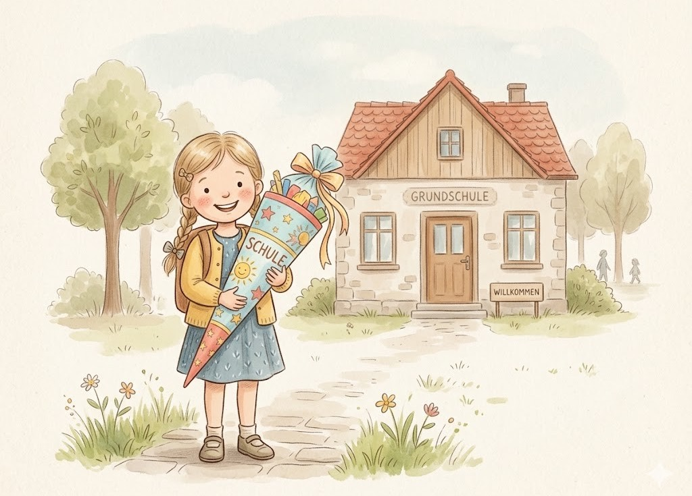